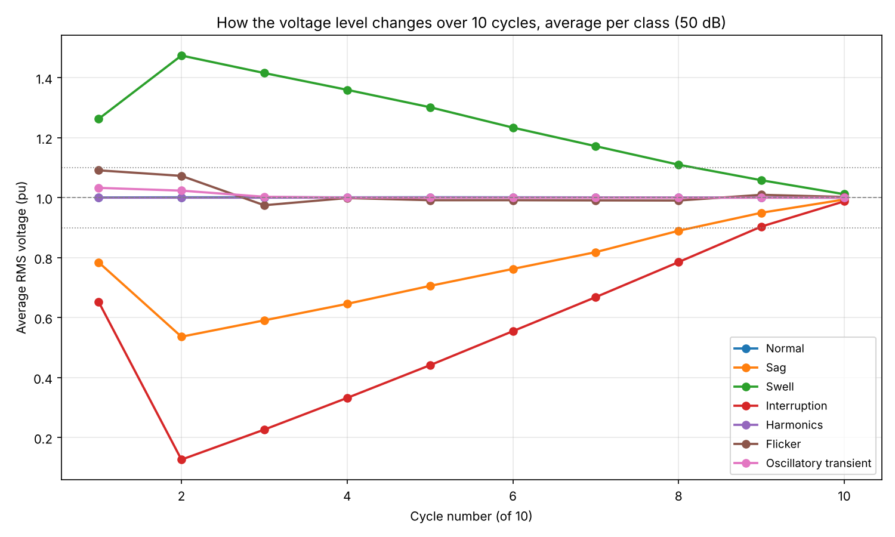
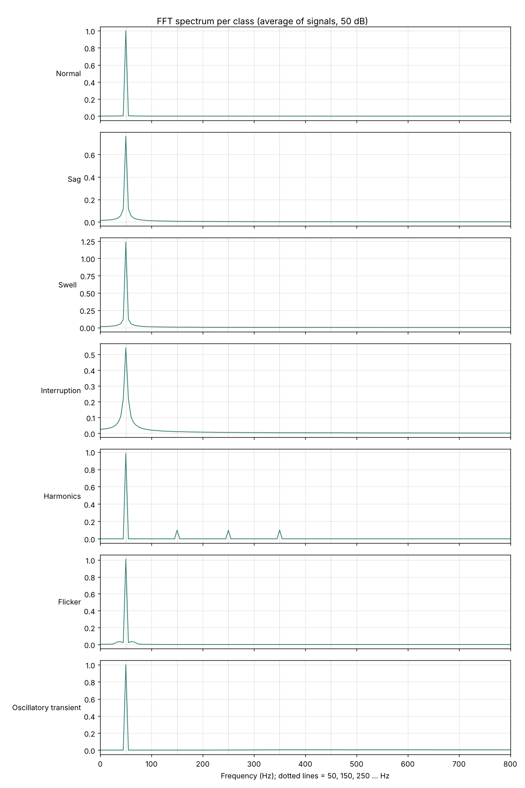
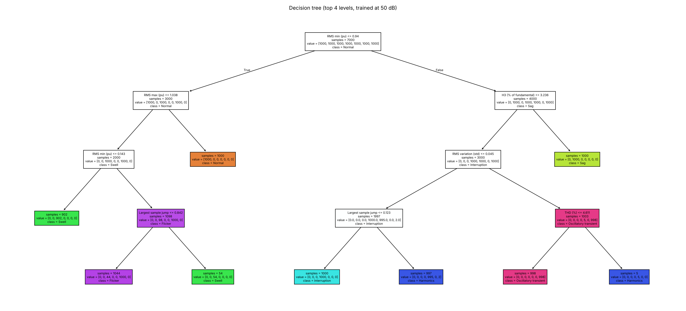
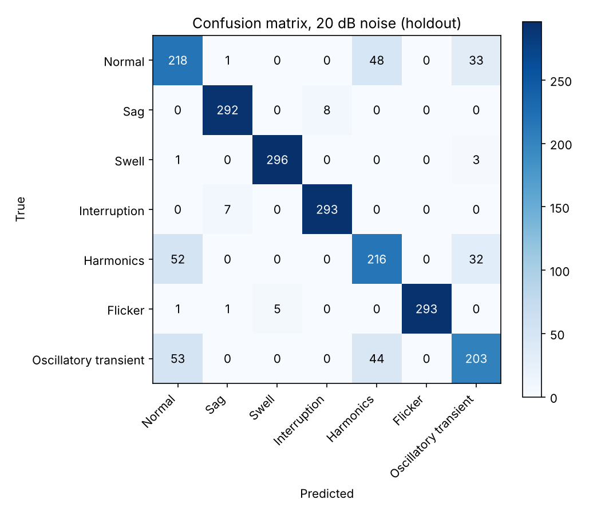

Power Quality Disturbance Classification
A decision tree trained on public datasets (two Mendeley sets and one GitHub set), run in MATLAB. Simulated data.
Summary
The data
- Wavelet dataset (PQ Disturbances V4): 750 rows, 72 wavelet statistics each (54,000 numbers in total). 414 rows belong to the 7 single-event classes (29,808 numbers).
- FFT dataset (PQ Issues Using STFT V2): 500 rows, 794 STFT values each (397,000 numbers in total). It has 5 codes (0 to 4), 100 rows each. The file doesn't name them.
- Voltage dataset (HanShaoll PQD-1D-model, GitHub): the 7 base classes at 4 noise levels (20, 30, 40 and 50 dB). Each file has 1,000 signals, and each signal is 0.2 s of voltage at 3.2 kHz (640 samples). That is 28 files and 17,920,000 numbers in total. These are raw waveforms, not features. Download: GitHub, PQD-1D-model, PQD dataset folder, or IEEE DataPort, waveform-1D data and model.
The two Mendeley sets are used as published, and each row holds derived features. The GitHub set is simulated to IEEE 1159-2019 definitions, and its files are used as published.
How it was tested
- Holdout: 70% of rows to train, 30% kept aside for testing (seed 42, same class mix in both parts).
- 5-fold cross-validation: the data is cut into 5 parts, each tested once, and the scores are averaged.
- 10 repeated splits: the holdout test is repeated with 10 random seeds, to see how much the score moves.
Results
| Dataset | Holdout | 5-fold CV | 10 splits (mean) |
|---|---|---|---|
| Wavelet, 7 classes (414 rows) | 100.00% | 98.80% ± 1.20 | 98.39% |
| Wavelet, 13 labels (750 rows) | 97.78% | 98.27% ± 2.03 | 98.09% |
| FFT (STFT), codes 0 to 4 (500 rows) | 98.67% | 99.80% | 99.67% |
Run every graph on this page in MATLAB: Open all graphs in MATLAB Online.
All numbers are from MATLAB runs. "± 1.20" is the spread across the 5 folds.
Accuracy by dataset
Score across 10 random splits
Wavelet route: what the tree used
Top features by importance
One statistic family alone (5-fold CV)
Entropy scores 100%, but its values barely change within a class, so treat that number with caution.
FFT route (STFT): what the codes look like
Average feature value per block
Log scale. Codes 0 and 1 are strong in the first 120 features. Codes 2 to 4 are near zero. Values too small to show sit at the bottom.
Confusion matrix (holdout, 150 rows)
| True \ guessed | 0 | 1 | 2 | 3 | 4 |
|---|---|---|---|---|---|
| 0 | 30 | 0 | 0 | 0 | 0 |
| 1 | 0 | 30 | 0 | 0 | 0 |
| 2 | 0 | 0 | 30 | 0 | 0 |
| 3 | 0 | 0 | 0 | 29 | 1 |
| 4 | 0 | 0 | 0 | 1 | 29 |
Only errors: one code 3 guessed as 4, and one code 4 guessed as 3.
Electrical analysis: raw voltage waveforms (GitHub dataset)
The Mendeley sets hold features, not waveforms. This set holds the voltage itself, so we can see what each disturbance does to the signal. The decision tree uses 11 electrical features per signal: RMS levels per cycle, peak, a sudden-jump measure, 3rd, 5th and 7th harmonics, total harmonic distortion (THD) and high-frequency energy.
What each class looks like (average over 1,000 signals, 50 dB)
| Class | Lowest RMS (pu) | Highest RMS (pu) | 3rd harmonic (%) | THD (%) |
|---|---|---|---|---|
| Healthy (Normal) | 0.98 | 1.02 | 0.26 | 1.5 |
| Sag | 0.52 | 1.01 | 0.96 | 3.5 |
| Swell | 1.00 | 1.48 | 0.52 | 2.0 |
| Interruption | 0.12 | 1.01 | 2.60 | 8.3 |
| Harmonics | 0.99 | 1.01 | 10.19 | 18.3 |
| Flicker | 0.87 | 1.14 | 0.27 | 1.5 |
| Oscillatory transient | 0.99 | 1.05 | 0.33 | 3.8 |
RMS is in per-unit of the 1.0 pu peak, measured on each 50 Hz cycle and then averaged. A lowest RMS near 0.12 means the voltage almost disappears. Sag and interruption show up in the level, harmonics in the distortion, and flicker in the slow swing of the level.
Accuracy at each noise level
| Noise (SNR) | Holdout (70/30) | 5-fold CV | Trained at 50 dB, tested here |
|---|---|---|---|
| 20 dB | 95.62% | 95.20% ± 0.70 | 73.21% |
| 30 dB | 98.90% | 98.81% ± 0.31 | 82.91% |
| 40 dB | 99.38% | 99.27% ± 0.11 | 85.80% |
| 50 dB | 98.90% | 99.30% ± 0.20 | 99.81% |
The first two columns train and test at the same noise level. The last column trains once on clean (50 dB) signals and tests on noisier ones. It drops to about 73% at 20 dB, so a real system should be trained on data with noise like its own. These numbers are from the MATLAB run; the figures below come from the Python run, which gives the same pattern (66% for the 20 dB cell).






Run these graphs in MATLAB: Open show_github_pqd in MATLAB Online, then type show_github_pqd in the Command Window.
Limits: the dataset has voltage only, so there is no current analysis. The signals are simulated, so these results show how well the features separate the classes, not how a real meter would perform. The features are our own measures, not the Mendeley features, so the numbers can't be compared with the Mendeley results. These numbers and figures come from a Python run on the same files. The MATLAB script show_github_pqd.m repeats the analysis; it is written but not yet run in MATLAB, and its numbers may differ slightly because of how the random splits are generated.
Customer report
A script writes one row per test case with the predicted class and a suggested action, such as a DVR for a sag or a UPS for an interruption. It also writes a plain-text summary. The actions are indicative only.
Run on the 7-class wavelet data (holdout, 124 test rows):
| Result | Value |
|---|---|
| Test rows | 124 |
| Correct | 124 |
| Accuracy | 100.00% |
Recall per class: Flicker 100%, Harmonics 100%, Healthy 100%, Interruption 100%, Oscillatory transient 100%, Sag 100%, Swell 100%.
Reference papers and research gap
1. Xu et al. (2026), A power quality disturbance classification method using a hybrid transformer and discrete wavelet transform model, Electric Power Systems Research 253, 112547 (Elsevier). DOI 10.1016/j.epsr.2025.112547. Read the paper
- Closest to our idea: it combines wavelet (DWT) and FFT features, like the hybrid plan in Phase 1.
- Its data: 1,000 generated signals per class. The real-signal tests are not described in the sections we could read.
2. Zhao, Shang and Sun (2019), Power quality disturbance classification based on time-frequency domain multi-feature and decision tree, Protection and Control of Modern Power Systems 4, 27 (Springer). DOI 10.1186/s41601-019-0139-z. Read the paper
- Closest to our method: wavelet features with a decision tree to name the disturbance.
- Its data: simulated signals with added noise. The authors say practical classification still needs further research.
What this project adds:
- Both comparison papers use their own generated data. This project uses public datasets that anyone can download and check: two Mendeley sets and a GitHub set of raw voltage waveforms.
- Results are reported with 5-fold cross-validation and 10 repeated splits, so the spread of scores is visible, not only one number.
- It tests two feature types, wavelet and STFT, on separate public datasets, and shows which feature groups matter most.
- It turns a predicted class into an indicative action, with a customer-style report.
Run in MATLAB
cd('/Users/suma/Hybrid_PQ_Project/clean_mendeley_project')
clear functions
run_mendeley_project % wavelet results
run_stft_benchmark % FFT results
run_mendeley_report % customer report
show_github_pqd % voltage waveforms, electrical features, noise test (downloads about 260 MB first time)